01Spesialområder
Bygg i stor skala
Bygninger og store prosjekter, fra råbygg til siste finish. Grundig planlegging, samkjørte team og kontroll på hver fase.
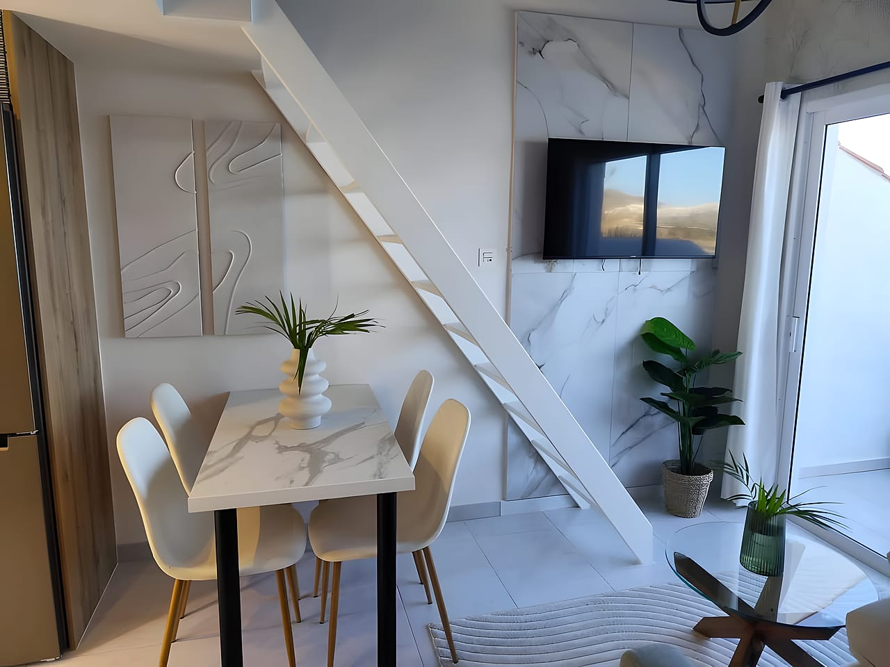
Bygg og oppussing · Gran Canaria
Kvalitet i hver detalj. Engasjement i hvert resultat.
01Acabados e Inversiones J.G.M., S.L.
I Acabados e Inversiones J.G.M., S.L. utfører vi bygg-, oppussings- og rehabiliteringsprosjekter med presisjon, solid håndverk og øye for detaljer.
Vi tilbyr en personlig og nær service, tilpasset hver kundes behov, med profesjonell oppfølging på norsk, spansk og engelsk.
02Prosjekter
Trykk på et prosjekt for å se alle bildene.

Vårt lokale
Vi legger siste hånd på oppussingen. Snart kan du stikke innom og fortelle oss om prosjektet ditt.
03Før og etter
Velg et prosjekt og dra over bildet.
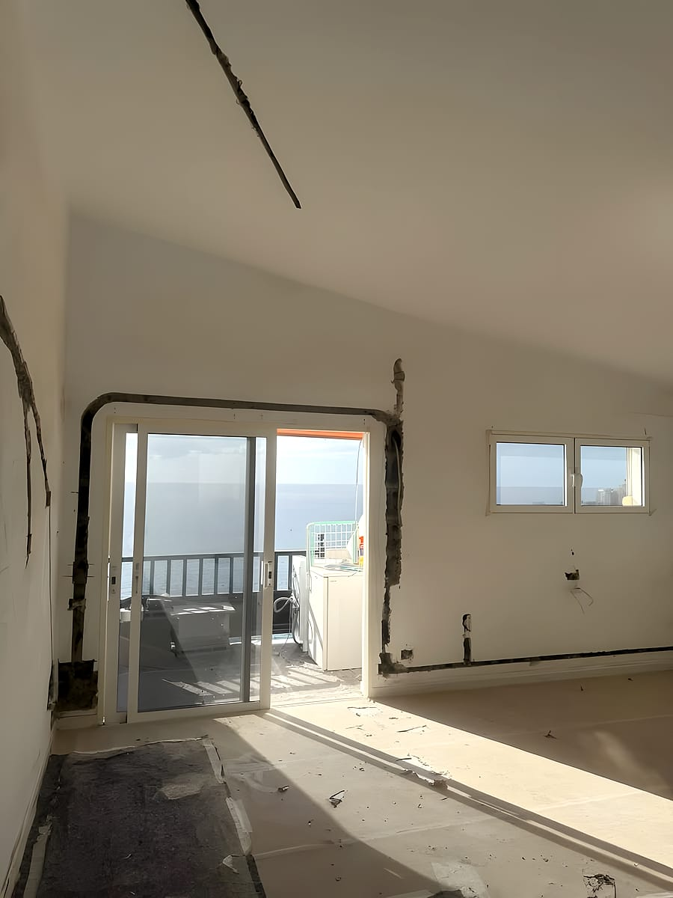
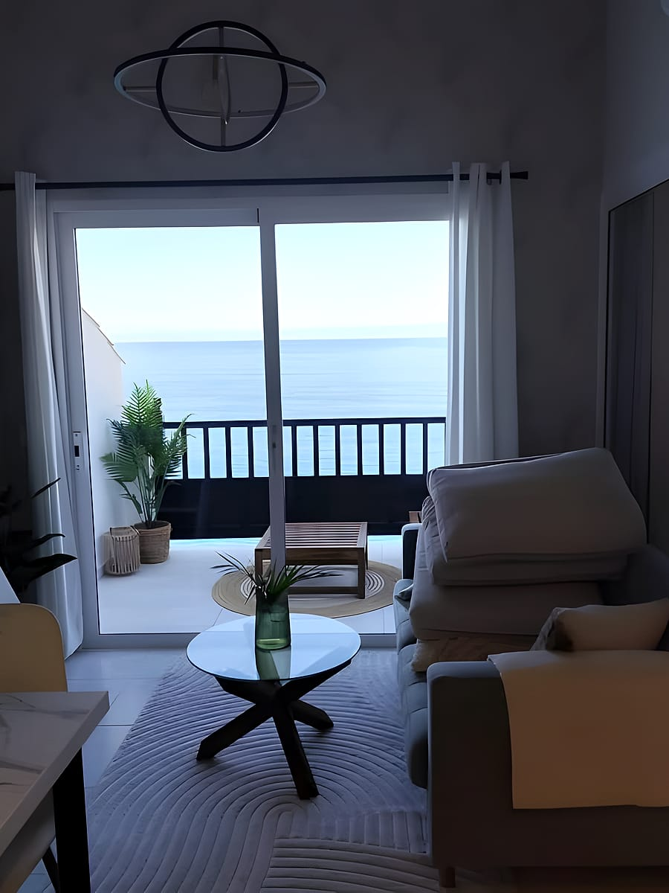
Leilighet ved havet


Nytt kjøkken Arguineguín · 2026


Trefasade Norge
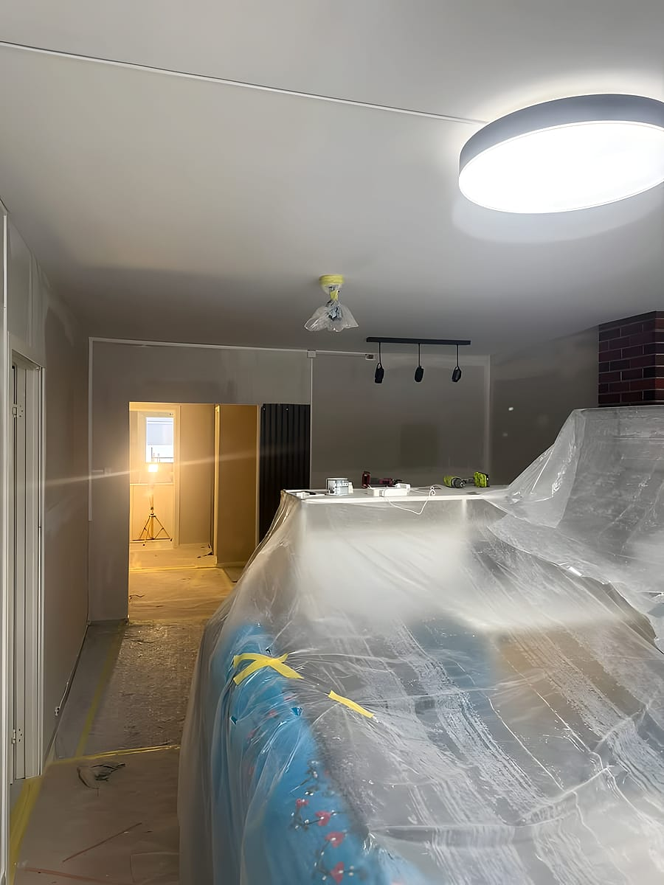
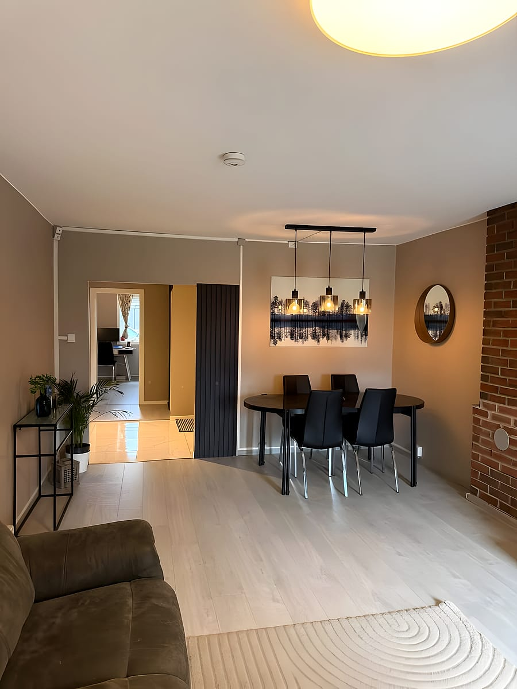
Stue og spisestue
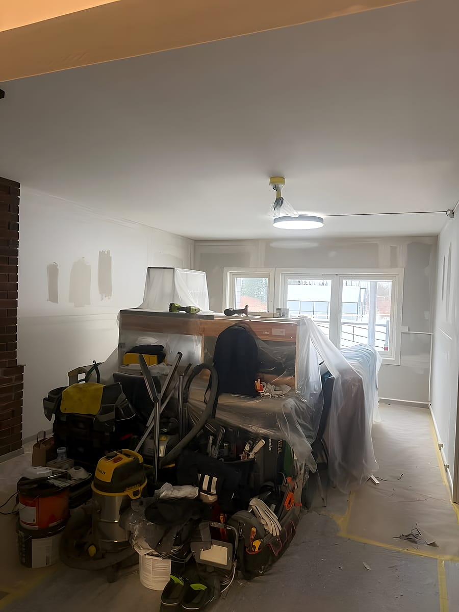
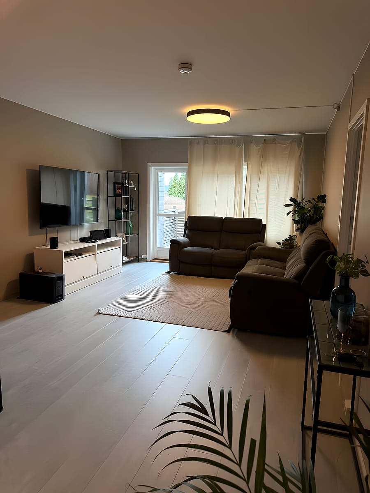
Stue
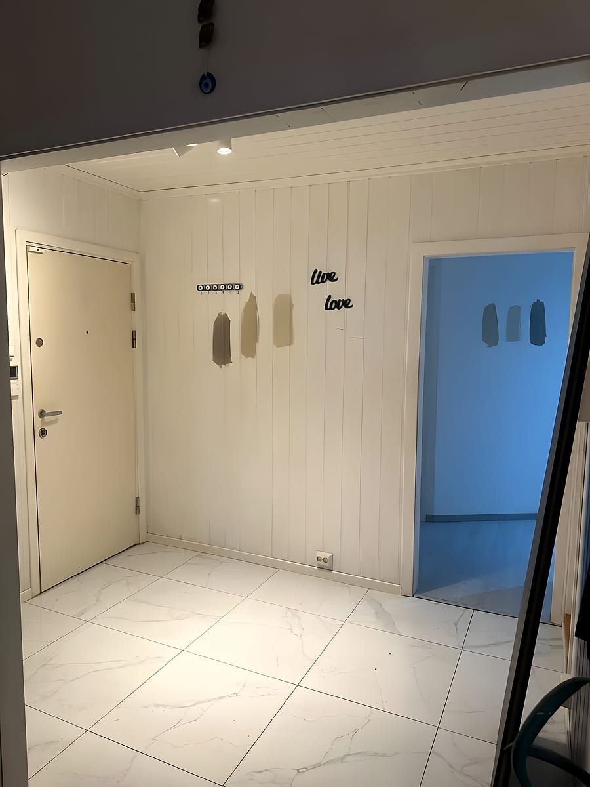
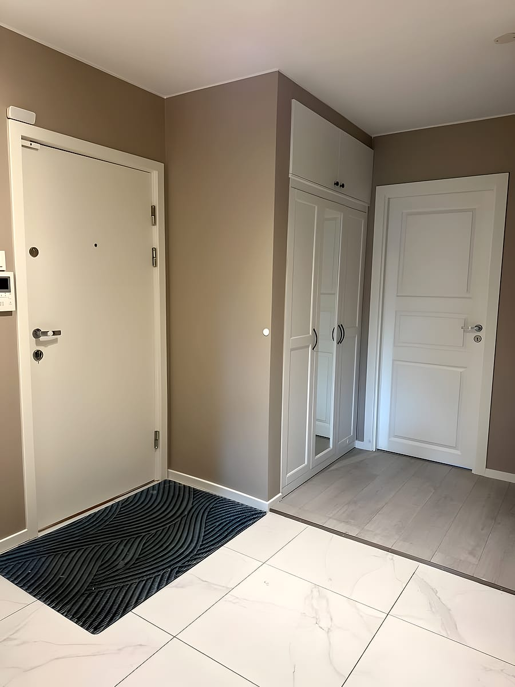
Gang

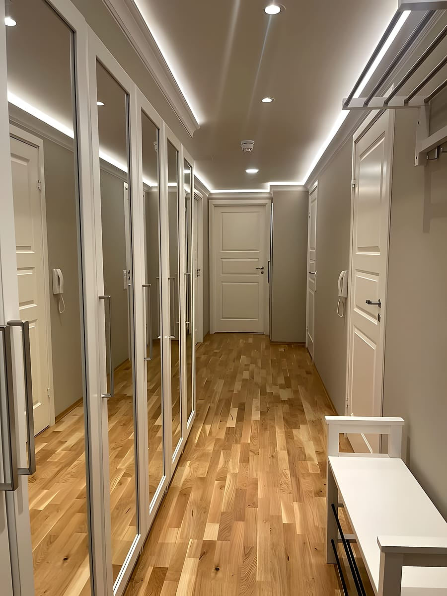
Eksklusiv entré
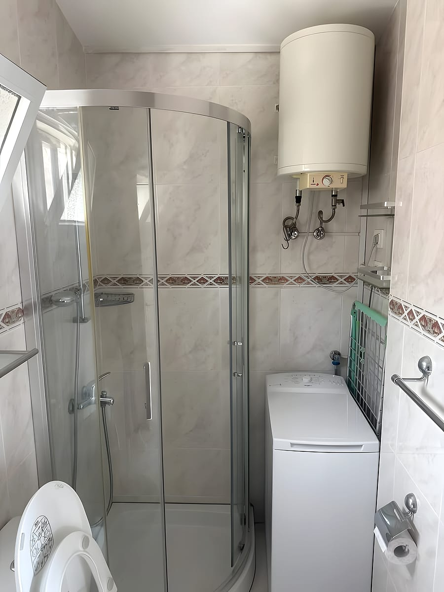

Bad


Terrasse Arguineguín · 2024


Loftsrom
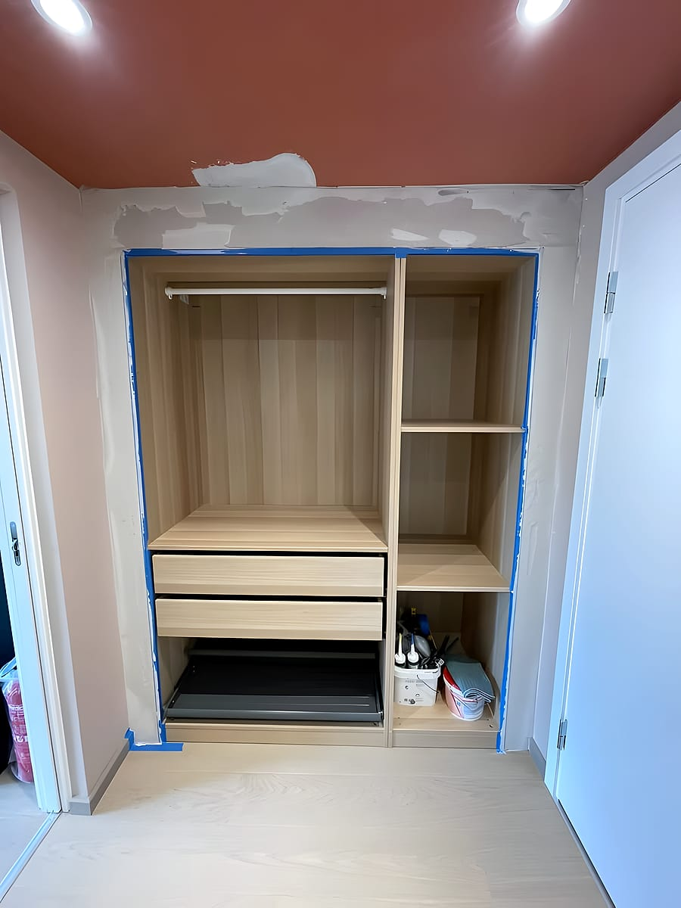

Innebygde skap
04Spesialområder
01Spesialområder
Bygninger og store prosjekter, fra råbygg til siste finish. Grundig planlegging, samkjørte team og kontroll på hver fase.

02Spesialområder
Boliger, tilbygg og nybygg etter mål. Like høye krav til hver kvadratmeter, uansett prosjektets størrelse.

03Spesialområder
Vegger, himlinger og påforinger for store og små prosjekter: glatte flater, god isolasjon og løsninger tilpasset hvert rom.
04Spesialområder
Slik ser resultatet ut av en oppussing der hvert rom har funnet sin plass. Et ferdig prosjekt, klart for en ny epoke.

05Vår historie
Vi har lang erfaring innen bygg og oppussing, med prosjekter innen nybygg, rehabilitering og totalrenovering av boliger, bygninger og hoteller.
Erfaringen vår spenner fra nye bad og kjøkken til fornying av gulv, fasader og interiør, alltid med en arbeidsmetode basert på presisjon, nøye utførte overflater, orden og renhold.
Vi satser på åpen kommunikasjon og personlig oppfølging, og er med kunden gjennom hver fase av prosjektet.
06Kundeomtale
«Det er jeg kjempefornøyd med.»
Elisabeth, norsk kunde på Gran Canaria (2024)
07Instagram
Hver uke viser vi hvordan prosjektene våre utvikler seg.
08Kontakt
Fortell oss hva du trenger, så svarer vi deg på e-post. Skriv gjerne på norsk, spansk eller engelsk.